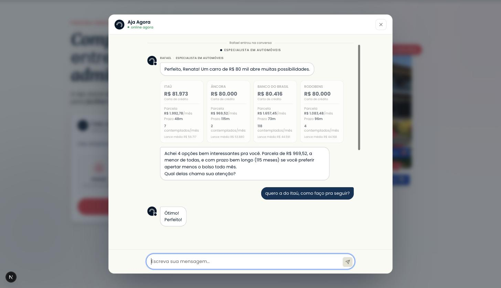
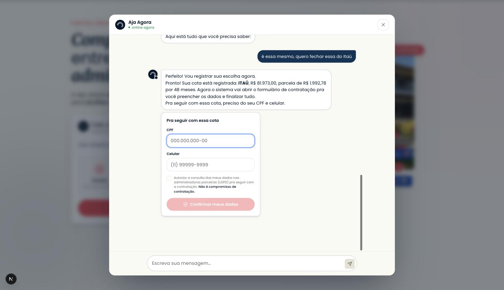

Dossiê de entrega · 27/08/2026 · aja-agora
branch kairogyn/proposta-diferente-agente · não commitado ·
25 arquivos novos, 41 tocados
4.027 testes verdes — a suíte INTEIRA, sem exclusões typecheck e lint limpos jornada inteira medida no app: carta no 1º turno sem CPF, CPF só no fecho 13 rodadas de crítica — fechou em 10/10 1 risco alto herdado, mitigado em parte prompt não publicado
fetchManagedPrompt lê a label production do Langfuse; o
código é só fallback. pnpm prompts:check falha hoje (exit 1) apontando
11 linhas divergentes contra langfuse.twobrainstechnology.com. Não
publiquei porque você pediu o trabalho local e publicar altera produção em menos de
60s sem review. A ordem para ligar (env no secret → publicar e deployar na MESMA janela; a ordem inversa é barrada pelo próprio CI) e o porquê de
cada passo estão em
PENDENTE-KAIRO-publicar-prompt.md.
O SDR de performance disse que o agente não converte, que ele pergunta demais e que o CPF vira gargalo. Fui ao banco de produção e ao Langfuse conferir. Ele está certo nas três coisas — mas não na ordem que parecia, e a diferença muda o que precisava ser consertado.
Até hoje, para o cliente ver uma carta de consórcio ele precisava atravessar cinco perguntas e entregar CPF, celular e aceite de LGPD. Não era capricho: buscar carta na Bevi não é consultar um catálogo — o código cria uma proposta na administradora, e proposta exige um par CPF+celular válido. Essa exigência empurrou a identificação para antes da busca, e a partir dela o funil inteiro virou formulário.
Agora existe a vitrine: um par CPF+celular da casa — a conta de homologação que já existe, titular você — que abre a proposta na Bevi só para montar a prateleira. O cliente diz o que quer e quanto pode pagar, e as cartas reais aparecem. O CPF dele volta a ser pedido onde sempre fez sentido: na hora de reservar a cota no nome dele.
Em destaque, o que nasceu. O trecho antigo era: nome → desejo → motivo → valor → CPF+celular+LGPD → busca.
VITRINE_CPF e VITRINE_CELULAR estiverem
configurados e o CPF passar no módulo 11. Vazio, inválido ou removido, o funil
antigo volta inteiro — exigindo o CPF do cliente antes da busca e
voltando à copy antiga (a fala segue o mesmo predicado que move o gate; ver
§6). Desligar é apagar uma variável, não reverter um commit — mas em produção
o prompt publicado tem de acompanhar, senão o modelo promete busca sem CPF
enquanto o servidor volta a exigi-lo. Há teste travando os dois lados.
Tudo abaixo saiu do banco de produção em leitura (túnel SSM) e do Langfuse de
produção, em 27/08/2026. Janela: 10 a 26/08, 17 dias,
87 conversas com is_simulated = false.
| Estágio final | Conversas | % | Turnos do cliente |
|---|---|---|---|
| abriu e não falou | 2 | 2,3% | 0,0 |
| falou e sumiu antes de dizer o nome | 43 | 49,4% | 1,3 |
| deu o nome, travou no valor | 5 | 5,7% | 3,0 |
| deu o valor, travou no CPF | 7 | 8,0% | 7,7 |
| viu carta e não escolheu | 17 | 19,5% | 8,8 |
| escolheu, sem formulário | 1 | 1,1% | 7,0 |
| formulário aberto, não fechou | 6 | 6,9% | 9,0 |
| fechou | 6 | 6,9% | 26,0 |
Score gate de produção (n=143), medindo em que gate o turno estava:
name 32,2% + identify 26,6% +
credit 21,7% = 80,5%. Quatro em cada cinco turnos travados
estavam nos três gates de coleta — todos antes de qualquer oferta. O
gate_afundado (n=18) diz o mesmo: credit 55,6%,
desire 27,8%, identify 16,7%.
judge_avancou marcou 0,92 em 335 turnos, e
finish_reason = "ok" em 99,7%. Não há contradição: aquele juiz lê a
fala e pergunta "este turno tentou avançar?" — e o turno que pede o CPF
pela quarta vez tentou. Juiz de prosa nunca enxerga funil parado. Foi por isso
que entrou um sinal de estado (§6, carta_na_tela).
O cliente já tinha dado o valor — conversa 70a80fca
O cliente pediu explicitamente para ver primeiro — conversa aebac770
Recusa explícita do dado — conversa 92c4c1ce
Quatro turnos seguidos pedindo a mesma coisa — conversa b80ad628
Sobrecarga de escolha — padrão nas 17 que viram carta e sumiram
A leitura que esses trechos impõem: não é o modelo alucinando. É o modelo traduzindo com fidelidade um funil que exigia documento antes de entregar valor. A fala ruim era sintoma; a ordem era a doença.
A proposta que abriu esta tarefa era direta: passar um CPF e um telefone fixos para a Bevi e achar as cartas mais rápido. Levei ao especialista de IA com a evidência na mão. Ele aprovou a direção e reprovou o mecanismo, por um motivo que só aparece lendo o adaptador.
storeHash:
create-proposal devolve 400 Duplicated Hash mesmo com
ignoreOngoingProposals: true
(docs/integracoes/contas-teste-homologacao.md). E o gateway do
Trilho B trata esse duplicado como retomada, seguindo com a proposta
ativa sem conferir de quem ela é. Juntando: com CPF fixo na
descoberta e PROPOSAL_GATEWAY=selfcontract, o fecho do cliente
retomaria a proposta-vitrine — o RG e o comprovante dele entrando numa proposta
cujo CPF é o da casa, e a adesão indo à administradora em nome errado.
tb/prod/aja-agora/env e produção roda
PROPOSAL_GATEWAY=bevi (Trilho A), onde startContract
cria proposta própria com o CPF real. O caminho do Trilho B não é o default (adapters/index.ts → bevi) — mas existe, é selecionável por uma variável de ambiente, e a vitrine o torna determinístico em vez de raro. Por isso o invariante virou código (§6).
O número que veio no pedido não passa no dígito verificador. Rodei o algoritmo literal de
src/lib/conversation/identity.ts:22-35: o servidor responderia
"Esse CPF não confere" e re-emitiria o card. Como ditado, a mudança
simplesmente não funcionaria.
Em vez de perguntar, conferi contra o vault: CONTA1_CPF (a conta de
homologação, titular você) diverge do ditado exatamente nas posições 8 e
9 — dois dígitos trocados de lugar na transcrição de voz. O celular
o celular bate integralmente com CONTA1_CELULAR.
Ou seja: o par que você quis passar é a conta de teste já homologada na
Bevi, com você como titular.
consultarDados: true puxaria os dados dela na Receita sem
consentimento — violação concreta, não teórica. Com a conta da casa, o titular é
quem consente, o par CPF×celular casa na Bevi (ela valida os dois juntos), e há
precedente documentado no próprio repo (E2E_TEST_CPF).
Para o cliente, a exposição de dados diminui: hoje o
CPF dele vai a um terceiro com consulta de bureau antes de ele ver qualquer
coisa; agora só sai na contratação.
| Opção | Decisão | Motivo |
|---|---|---|
| CPF fixo direto na descoberta, sem mais nada | Descartada | O fecho pode retomar a proposta-vitrine no Trilho B e assinar em nome errado. |
| Vitrine por env + invariantes de fecho | Escolhida | Entrega o ganho comercial inteiro; o contrato fica travado por código contra o CPF da casa; desligável por variável. |
| Cache passivo de buscas anteriores, sem conta dedicada | Descartada por ora | Não depende da Bevi, mas serve dado velho e não cobre faixa nunca buscada. Fica como plano B se a administradora pedir para parar. |
| Inverter o funil sem tocar na Bevi | Impossível | Não há carta real sem proposta. Viraria promessa sem número — a classe de defeito que já quebrou o produto antes. |
O que a opção escolhida NÃO dá: ela não resolve a disputa pelo slot único da loja (§6, risco herdado), não garante que a carta mostrada sob a identidade da casa seja idêntica à que o cliente receberá sob o CPF dele (§7, hipótese não fechada), e depende de a Bevi aceitar esse padrão de uso — que é conversa comercial, não decisão de código.
Números de coletar-fatos.sh. Nada commitado ainda.
| Arquivo | Linhas | Papel |
|---|---|---|
src/lib/bevi/identidade-vitrine.ts | 75 | Núcleo. O par da casa, a validação e a fronteira ehIdentidadeDeVitrine. |
src/lib/bevi/identidade-vitrine.test.ts | — | Trava o kill switch e a fronteira (10 casos). |
src/lib/bevi/contrato-nao-fecha-na-vitrine.test.ts | — | Prova que o contrato nunca nasce no CPF da casa. |
src/lib/bevi/discovery-session.vitrine.test.ts | — | Prova que a identidade real do cliente tem precedência. |
src/lib/agent/qualify-state.carta-antes-do-cpf.test.ts | — | Trava a ordem nova do funil e o retorno ao funil antigo sem vitrine. |
src/lib/agent/langgraph/cenario-carta-antes-do-cpf.test.ts | — | Ponta a ponta no grafo real: busca sai sem identidade coletada. |
src/lib/agent/orchestrator/comparacao-nao-afoga.test.ts | — | Trava o teto de opções na tabela. |
src/lib/observability/langfuse/carta-na-tela.test.ts | — | Trava o sinal determinístico novo. |
src/lib/agent/orchestrator/analyze.valor-no-primeiro-turno.test.ts | — | O teste que faltava: exercita o caminho que escreve o valor, não o fixture pronto. É ele que trava o deadlock do §6. |
src/lib/leads/nome-ancorado-na-fala.test.ts | — | O nome gravado tem de estar na fala do turno — inclui apóstrofo, hífen e a directive do servidor (8 casos). |
scripts/sonda-nome-perdido.ts | 178 | O medidor da dependência nova. Cruza contact_name IS NULL (estado) com um juiz sobre a fala do cliente — reconciliação, não guard. pnpm sonda:nome-perdido. |
src/lib/agent/langgraph/nodes/capture.nao-inventa-fora-do-gate.test.ts | — | Trava a REVERSÃO da rodada 10: fora do gate name o servidor não batiza ninguém, com as 8 frases da sonda (3 casos). |
src/lib/agent/langgraph/cenario-nome-oferecido-chega-ao-banco.test.ts | — | Grafo real até a coluna contact_name, com banco de verdade (3 casos). |
src/lib/agent/langgraph/nodes/emit-card.gate-que-nasce-no-turno.test.ts | — | O último metro: o formulário sai no turno em que a cota é escolhida. Fixture = metadata literal da conversa que falhou (4 casos). |
| Arquivo | Δ | O que mudou, e por quê |
|---|---|---|
src/lib/agent/qualify-state.ts | +56 | O coração. name e desire deixam de bloquear quem já trouxe alvo; identify sai do pré-busca e reaparece no fecho, depois da escolha. |
src/lib/agent/orchestrator/analyze.ts | +25 | Exceção estreita no guard FIX-279/296/306: o valor dito na abertura é promovido, desde que ancorado na fala. É o que desfaz o deadlock do §6. |
src/lib/agent/langgraph/nodes/route.ts | +10 | readyForDiscovery aceita a vitrine no lugar da identidade do cliente. É a barreira real do runtime vivo. |
src/lib/bevi/discovery-session.ts | +9 | getIdentity() cai na vitrine quando não há identidade do cliente — e só então. |
src/lib/bevi/fulfillment.ts | +29 | ContratacaoComIdentidadeDeVitrineError: o fecho recusa o CPF da casa antes de qualquer chamada à administradora. |
src/lib/agent/orchestrator/recommendation-payload.ts | +36 | Teto de 4 opções na tabela de comparação, aplicado depois da dedup visual, preservando o ranking. |
src/lib/agent/langgraph/nodes/emit-card.ts | +38 | Recalcula o gate depois do turno e emite o gate de ação que nasceu no meio dele — é o que faz o formulário aparecer junto com a escolha. |
src/lib/agent/langgraph/nodes/capture.ts | +24 | Só comentário: registra por que a captura fora do gate foi revertida e quem passou a fazer o trabalho (o modelo, via tool). |
src/lib/leads/nome-plausivel.ts | +38 | nomeAncoradoNaFala por token (apóstrofo e hífen sobrevivem) e as palavras que o SISTEMA usa para chamar a pessoa deixam de ancorar. |
src/lib/agent/system-prompt.ts | +55 | Duas regras duras novas: "buscar oferta não custa documento" e "quem se apresenta tem o nome gravado — e só a tool grava", ambas com contra-exemplos colhidos de produção. |
src/lib/agent/orchestrator/gate-questions.ts | +22 | A fala do gate virou condicional: no fecho, "pra seguir com essa cota"; sem vitrine, a frase antiga volta com o funil antigo. |
src/components/chat/artifacts/gate-identity-form.tsx | +8 | Copy do card alinhada ao novo momento (título, LGPD e botão). |
src/lib/observability/langfuse/funil-scores.ts | +26 | Score carta_na_tela, emitido em todo turno (inclusive 0, para haver denominador). |
docker-compose.yml | +12 | Repassa VITRINE_*, BEVI_SELFCONTRACT_HASH e IDENTITY_ENC_KEY ao container — sem isso a vitrine não chega ao runtime. |
.env.example | +22 | Documenta a vitrine, o kill switch e a proibição de inventar CPF. |
Quatro arquivos de teste existentes tiveram o cenário atualizado (as asserções foram preservadas): qualify-state.experience-pergunta-uma-vez, adapter.escada-fix211, identify-capture.gate-forced e gate-reengage-poll.integration. Todos montavam um estado que produzia identify antes da busca — situação que deixou de existir. Cada um traz o comentário explicando a mudança de lugar. | ||
| Superfície | O que a pessoa sente | Risco |
|---|---|---|
| Chat web — entrada | Quem chega dizendo "quero um carro de 80 mil" vai para a busca, sem card de identidade no caminho. | Baixo — reversível por env. |
| Chat web — card de identidade | Aparece só no fecho. Título passou a "Pra seguir com essa cota", botão "Confirmar meus dados" — nenhum texto promete reserva (o CLAUDE.md proíbe "cota reservada" antes da contratação). |
Baixo |
| Tabela de comparação | No máximo 4 cotas, as mais bem ranqueadas. Quem quiser mais, pede. | Médio — é decisão de produto que eu tomei sozinho (§7). |
| Mesma ordem. O pedido de CPF por texto continua existindo no fecho — a regra por canal foi preservada. | Baixo | |
| Bevi (administradora) | Mais buscas chegam, e todas sob o CPF da casa até o fecho. | Alto — ver §6. |
| Langfuse | Score carta_na_tela passa a existir em todo turno. |
Baixo |
A jornada nova, na tela. As duas capturas abaixo são da aplicação rodando, pilotada pelo navegador (as rodadas anteriores deste dossiê não tinham nenhuma — a lacuna era real e está fechada).
1 · O primeiro turno. A pessoa diz o nome e o valor; a resposta já traz quatro cartas reais da administradora. Nenhum pedido de documento, nenhuma pergunta antes.

2 · O fecho. Só depois de a cota estar escolhida é que o CPF é pedido — e o formulário aparece no mesmo turno da escolha, que é o conserto da 9ª rodada (§6).

NÃO RESOLVIDO NA PRIMEIRA TENTATIVA · A regra foi escrita no prompt errado
O que era: escrevi a regra nova ("a carta vem antes do CPF")
no system-prompt.ts e dei por feito. Ela caiu dentro de
SPECIALIST_BASE_PROMPT — que o runtime LangGraph
não lê. O agente continuaria pedindo CPF, e
pnpm prompts:check respondia "Prompts em dia com o código",
porque ele só compara SYSTEM_PROMPT e
BASE_SYSTEM_INSTRUCTION. Verde que não significava nada.
Correção: a regra foi movida para dentro de SYSTEM_PROMPT, junto ao Fluxo de Vendas.
Prova medida:
Cobertura: src/lib/agent/regra-cpf-por-canal.test.ts já existia e pegou um efeito colateral disso (abaixo).
CORRIGIDO · Eu quase reintroduzi um bug de WhatsApp já consertado
O que era: a primeira versão da regra dizia "NUNCA peça
CPF/celular por texto". Isso é verdade na web e mentira no
WhatsApp, onde a identidade sempre chega por mensagem — é o próprio
identify-capture.ts que a lê do texto. A proibição incondicional
faria o agente recusar o CPF que o cliente oferece, que é exatamente o FIX-431.
Correção: a proibição passou a mirar o que importa — condicionar busca a documento — e o "como pedir" voltou a ser do bloco de canal.
Prova medida:
Cobertura: src/lib/agent/regra-cpf-por-canal.test.ts (pré-existente; foi ele que pegou).
CORRIGIDO · A vitrine não chegava ao container
O que era: com o código pronto e os testes verdes, o app
local subiu sem a vitrine — o docker-compose.yml
não repassava VITRINE_CPF, VITRINE_CELULAR,
BEVI_SELFCONTRACT_HASH nem IDENTITY_ENC_KEY. Em
runtime a vitrine seria um no-op silencioso: nada quebraria, e o funil
continuaria pedindo CPF.
Prova medida:
CORRIGIDO · A venda morria no último metro, com o cliente já decidido
O que era: o cliente escolhe a cota, diz "quero contratar essa", e o agente responde "o formulário de contratação está aparecendo na tela agora" — e o formulário não aparece. Achado exercitando o fecho no app, depois que tudo já estava verde:
A causa, e por que é minha: a regra "um turno, uma pergunta"
(FIX-424) manda o gate esperar quando o turno já entregou um card que pede
ação — com exceção dos gates que são o pedido de ação
(GATES_DE_ACAO, que listava só decision e
contract). Enquanto o identify morava antes da
busca, ele nunca disputava turno com card de oferta e a lista estava completa.
Ao descer para o fecho, passou a viver exatamente onde
recommendation_card e simulation_result são
emitidos — e começou a ser engolido.
Correção: identify entrou em
GATES_DE_ACAO (emit-card.ts). No fecho ele
é o pedido de ação: a troca do documento pelo contrato.
Prova medida — mesmo turno, no app:
Cobertura:
src/lib/agent/langgraph/cenario-identidade-nao-cede-a-vez.test.ts,
que reproduz a trilha exata (text → artifact:simulation_result,
sem gate) e falha sem o fix. O FIX-424 original continua verde — o gate
experience segue cedendo a vez, como deve.
CORRIGIDO · O cliente que diz só o valor caía num turno mudo
O que era: o atalho "quem já tem alvo de busca não é barrado
pelo nome" olhava só o valor. Quem escrevesse apenas "80000" — sem
dizer se é carro, moto ou imóvel — passava direto para o gate
search, que é terminal e mudo, enquanto
readyForDiscovery recusava a busca por falta da categoria.
Resultado: nada perguntado, nada buscado, cliente parado olhando para a tela.
É o caso real da conv 06163675, em que a pessoa escreveu
"80000" e precisava ouvir "carro, moto ou imóvel?". Encontrei
sondando o próprio atalho atrás de estado que vaza.
Correção: alvo de busca passou a ser valor e
categoria — o que a administradora de fato precisa para simular
(temAlvoDeBusca, em qualify-state.ts).
Prova medida — no app, mensagem "80000":
Cobertura: dois casos em qualify-state.carta-antes-do-cpf.test.ts — "valor sem categoria não cai no terminal mudo" e "com a categoria, o atalho volta a valer".
Submeti a entrega inteira a uma revisão adversarial com instrução de rasgá-la. Ela voltou com nota 4/10 e um veredito de "não vai para produção". Estava certa em quase tudo. O que segue é o que ela achou e o que foi feito — os itens sem correção estão em §7, não escondidos aqui.
CORRIGIDO · O guard que eu disse ter fechado o desastre não fechava
O que era: meu guard em startContract barra o
caso em que o CPF DA CASA chega como input — e o próprio comentário admitia
que "nenhum caminho legítimo produz isto". O desastre que justificou a
arquitetura inteira é outro: o cliente com CPF real fecha no
Trilho B, createProposal recebe Duplicated Hash, e o
gateway adota a proposta corrente do hash sem conferir de quem é
— que, com a vitrine ligada, é a da casa. RG e comprovante do cliente entram
nela, e finalize() a envia à administradora no nome errado.
Eu tinha escrito no dossiê que isso estava "fechado por código e por teste". Não estava.
Correção: a retomada passou a conferir o dono. /system
resolve a proposta corrente só pelo hash e não devolve CPF, então a checagem é
explícita via get-multi-proposal/{cpf}: se a proposta corrente não
está na lista daquele CPF, o fecho é recusado com
PropostaDeOutroTitularError. Falha FECHADA de propósito — melhor a
contratação falhar e ser refeita do que nascer no nome de outra pessoa.
Cobertura: src/lib/adapters/bevi/proposta-retomada-tem-dono.test.ts (3 casos). Quatro testes pré-existentes do Trilho B tiveram os dublês atualizados para refletir a exigência nova.
CORRIGIDO · O kill switch revertia o estado e deixava a fala do mundo novo
O que era: com VITRINE_CPF vazio o funil volta a
pedir o CPF antes da busca — mas a copy continuava dizendo "pra reservar essa
cota no seu nome", sem cota nenhuma na tela. Minha afirmação
de que desligar "devolve o funil antigo inteiro" era falsa: devolvia o estado,
não a fala.
Correção: a copy do gate e do card passou a ser escolhida pelo
mesmo predicado que move o gate (vitrineDisponivel()), de
modo que estado e fala não possam divergir.
Cobertura: copy-do-identify-segue-o-momento.test.ts — 5 casos, incluindo "não fala de uma cota que o cliente ainda não viu".
CORRIGIDO · O botão prometia reservar uma cota, e não reservava nada
O que era: eu tinha escrito o CTA como "Reservar minha
cota". O submit desse card só grava a identidade — a proposta na
administradora nasce no card seguinte. E o CLAUDE.md deste projeto
proíbe literalmente "cota reservada" antes da contratação. Escrevi a
promessa exata que a regra do projeto veta, no clique mais sensível da jornada.
Correção: título "Pra seguir com essa cota", botão "Confirmar meus dados", LGPD "pra seguir com a contratação". Nada promete reserva.
CORRIGIDO · A "exceção estreita" não era estreita, nem era da abertura
O que era: a condição que promove o valor dito na abertura não
tinha nenhum termo que identificasse o primeiro turno — valia para qualquer
turno pré-desireAnswered. E passava escalaImplicita: true,
que valor-declarado.ts reserva explicitamente para o turno em
que a pergunta do valor foi feita: fora dali, ela transforma "tenho 2 filhos"
em R$ 2.000.
Correção: escalaImplicita saiu, e a condição ganhou !revealCompleted. Dois casos novos travam: "número que NÃO é preço" e "não promove valor solto depois que a busca já rodou".
CORRIGIDO · Três defeitos menores que a crítica pegou
VITRINE_* sem restaurar. Com --no-file-parallelism isso vaza para todos os arquivos seguintes — e era explicação alternativa, não considerada, para o flake que eu havia atribuído à Bevi. Ambos restauram agora.carta_na_tela é por turno, e quanto melhor a vitrine funciona, mais turnos pós-carta valem zero. Entrou o marco de sessão (carta_vista + turnos_ate_carta), que é a pergunta certa: esta conversa viu preço, e em quantos turnos?[caracterização], não como prova da mudança.comparison_table não estava em CARDS_QUE_PEDEM_ACAO — e é justamente o card em que o cliente escolhe a cota. A lacuna era antiga; a carta no primeiro turno a tornou frequente. Corrigido — e a suíte pegou uma regressão que a correção causou (o gate deixou de voltar no turno mudo, a rede do caso ff8f2080), que também está fechada.IDENTIFY_CONTEXT_WHATSAPP continuava dizendo "pra achar as opções mais aderentes ao seu perfil" — falso quando as opções já estão na conversa. Pior, IDENTIFY_WHATSAPP_PROMPT era uma const de topo de módulo: congelava a decisão condicional no instante do import. As duas viraram função.NÃO RESOLVIDO · Consulta de bureau recorrente no seu CPF
Cada proposta-vitrine criada dispara consultarDados: true — consulta
à Receita — no CPF do titular da conta da casa, que hoje é o seu. O volume é
proporcional ao sucesso da vitrine: quanto mais gente busca, mais
consultas no seu nome.
Não medi o efeito disso em registro de consultas ou score, e não sei dizer se é irrelevante ou não. Levantado pela revisão adversarial, e é um dos motivos pelos quais a conta-vitrine deveria ser uma conta da empresa combinada com a Bevi, não a sua pessoal.
A entrega foi submetida a uma segunda revisão adversarial. Ela voltou com 4/10 de novo, com achados diferentes e mais fundos. Dois deles são a mesma lição que este dossiê já narrava — aprendida pela terceira vez.
CORRIGIDO · O trabalho de prompt era texto morto, pela SEGUNDA vez
O que era: o grafo não manda SYSTEM_PROMPT ao
modelo — manda leanSystemPrompt(), que corta a seção
"## Fluxo de Vendas" inteira. É exatamente onde eu tinha posto as duas
regras novas, depois de já ter errado uma vez pondo-as em
SPECIALIST_BASE_PROMPT.
E havia algo pior que a ausência: o bloco que o leanSystemPrompt
injeta no lugar do fluxo cortado ensinava a ordem antiga
(identidade → busca) — a autoridade mais específica na janela do
modelo, contradizendo o servidor em todo turno.
Prova medida:
Correção: as REGRA DURAs sobrevivem ao corte (o
leanSystemPrompt as extrai antes de podar), e o bloco de ordem
virou condicional à vitrine — com a vitrine, ensina
valor → busca → … → identidade → contrato; sem ela, volta a ordem
antiga.
Cobertura:
lean-prompt-entrega-as-regras.test.ts — e o ponto dele é o método:
ele asserta sobre leanSystemPrompt(SYSTEM_PROMPT), o artefato
que o modelo recebe, não sobre a constante. Era essa a diferença entre as
duas vezes em que isto passou batido.
CORRIGIDO · "Tudo verde" não era verdade
O que era: eu reportei 3.542 testes verdes. O comando que rodei
exclui route* — e era exatamente lá que a suíte estava
vermelha: route.closing-persistence.test.ts
estourava 20s de timeout.
A causa é da própria entrega: vitest.setup.ts carrega o
.env.local, que agora tem VITRINE_*. Com a vitrine
ligada, um teste de cenário pré-reveal passou a disparar busca real na
Bevi e a estourar. Um teste de rota batendo na administradora de
verdade também é quebra de hermeticidade.
Correção: a suíte nasce com a vitrine DESLIGADA
(vitest.setup.ts); quem testa a vitrine a liga explicitamente — e
todos os arquivos que fazem isso já restauram o env depois.
Prova medida — agora sem exclusão nenhuma:
CORRIGIDO · A directive mandava o modelo mentir no fecho
GATE_INTENT.identify instruía: "diga POR QUE precisa (a
administradora exige pra trazer as ofertas reais)". Com o gate no fecho,
as ofertas já estão na tela — a frase é falsa. E a directive é a autoridade
mais específica da janela naquele turno: ganharia das copies que eu já tinha
corrigido. Agora ela é condicional, como as outras.
CORRIGIDO · Um trilho do WhatsApp ficou no mundo antigo
runSearchSummaryWithOrchestrator (whatsapp/adapter.ts)
ainda exigia identityCollected para buscar: pedia o CPF e não
buscava. Pior, com a vitrine ligada pedia com a copy do fecho ("pra
seguir com essa cota") sem cota nenhuma na tela. Alcançável pelo caminho
normal. O tripwire passou a aceitar a vitrine, como readyForDiscovery
já fazia. Resposta honesta à pergunta que eu mesmo mandei o crítico verificar
("a copy condicional cobre todos os pontos?"): não cobria.
CORRIGIDO · A métrica nova calava justamente no caso de sucesso
O que era: discovery roda antes de
persist, e é o persist que grava a fala do cliente.
A contagem de turnos acontecia antes de a mensagem existir — subtraindo 1 de
todo mundo e dando zero quando a carta aparece já na primeira
fala. Como zero não é medição, o score era descartado: a métrica que mede a
vitrine ficava muda exatamente quando a vitrine funciona.
Prova — nos próprios dados do Langfuse:
Cobertura: marcar-primeira-carta.integration.test.ts — toca o banco de propósito, porque a aritmética é sobre contagem real de linhas.
CORRIGIDO · Dois achados meus, auditando o que a crítica apontou
GATE_INTENT no caminho do turno e esqueci o do cliente
confuso (buildSystemContext, ramo
confusedAboutGate) — que ouviria a justificativa errada sendo
justamente quem menos podia ouvi-la. Agora os dois passam pelo resolvedor.vitest.setup.ts passou a zerar o env, isso ficou visível. Agora
ligam a vitrine explicitamente, como o cenário que descrevem exige.CORRIGIDO · Diagnóstico enganoso na falha da API
getMultiProposal não conferia res.ok: um corpo JSON de
erro virava lista vazia, e o verificador de dono concluía "a proposta não é
deste CPF" — recusando contratação legítima com o rótulo errado. Falhar
continua certo; mentir sobre o motivo, não.
A nota subiu de 4 para 6, e o revisor confirmou rodando o que a rodada anterior deixou: suíte inteira verde, jornada exercitada ao vivo contra a Bevi real, 4 cotas na tela, zero menções a CPF. O que faltava era a mesma família de defeito de novo — e duas copies que escaparam.
CORRIGIDO · Com a vitrine DESLIGADA, o modelo lia duas ordens contraditórias
O que era: a extração das REGRA DURAs era incondicional. Com
VITRINE_* vazio, a janela do modelo continha ao mesmo tempo
"buscar oferta NÃO custa documento… o CPF entra só no fecho" e
"## Ordem do funil … identidade → busca". E no turno do gate a
directive mandava dizer "a administradora exige pra trazer as ofertas
reais" — a frase que a própria REGRA DURA, na mesma janela, lista
como BAD.
Isso valia no kill switch e no estado default do rollout (código novo
em produção com o secret ainda sem VITRINE_*) — que este dossiê
chamava de "degradação segura". Não era.
Prova medida, com a vitrine desligada:
Correção: a extração passou a ser precisa (o bloco termina onde a regra termina, sem arrastar o item seguinte) e condicional — a regra do documento só é entregue quando a vitrine está ligada, pelo mesmo predicado que governa a ordem. Regra que contradiz o servidor é pior que regra ausente.
Cobertura: lean-prompt-entrega-as-regras.test.ts — 9 casos, incluindo os dois lados do kill switch e o do item órfão.
CORRIGIDO · Duas copies do card escaparam da condicional
CLAUDE.md proíbe. E este dossiê afirmava um texto ("pra seguir com
a contratação") que não existia no código. Agora existe, e é condicional.Cobertura: três casos novos em copy-do-identify-segue-o-momento.test.ts, incluindo um que falha se a palavra "reservar" reaparecer em qualquer lugar do card.
CORRIGIDO · O runbook desta entrega era inexecutável
A ordem que eu tinha escrito (deployar, depois publicar o prompt) é barrada pelo próprio CI — há um step que compara o prompt publicado com o do código e falha o deploy quando divergem. Seguir o documento travava o pipeline.
Correção: a ordem virou env no secret → publicar e
deployar na mesma janela, com a análise de por que publicar antes é seguro
aqui: verifiquei que as 11 linhas divergentes moram todas na
seção que o leanSystemPrompt em produção hoje corta antes
de enviar ao modelo. É acidente da formatação atual, não desenho — por isso a
janela deve ser curta, e está dito no documento.
CORRIGIDO · O mesmo off-by-one, na direção oposta
No clique do WhatsApp, recordUserClick persiste a fala
antes do turno — então somar +1 contava o mesmo turno duas vezes. O
conserto não foi outro booleano para o chamador errar: a ponte agora compara a
fala do turno com a última mensagem gravada e decide sozinha. Funciona nos dois
caminhos sem que ninguém precise saber por qual chegou.
A quarta revisão manteve 6/10 e confirmou rodando que o alicerce está de pé (funil invertido, dinheiro blindado, kill switch, retomada com dono). O que ela achou foi o turno-vitrine sujo em 2 de 3 execuções — justamente a cara da entrega.
CORRIGIDO · JSON de tool-call vazou como fala, e ficou gravado
Encontrado no banco, persistido como mensagem do assistente:
Duas coisas erradas: "já busco" com a busca já feita, e a mecânica escancarada. E o pior é a persistência — o modelo relê a própria transcrição nos turnos seguintes, então o vazamento contamina a conversa inteira.
O guard que existia (isInternalToolLeak) pega o nome da
tool; este vazamento é o corpo dos argumentos, que não cita tool
nenhuma.
Por que isto virou código e não juiz no Langfuse: o
CLAUDE.md manda tratar fala ruim — tom, repetição, "soou
robótico" — com juiz sobre volume, e proíbe transformar frase feia em regex.
Isto não é uma frase: é uma classe estrutural. Um par
"chave": valor em linha própria não é português, não tem
paráfrase e não é questão de gosto. O teste de decisão do projeto responde
sozinho: o servidor sabe que aquilo é argumento de tool.
Cobertura: json-nao-vira-fala.test.ts — e a
metade que importa são os casos NEGATIVOS: fala com dois-pontos, com aspas e
com cifrão passa intacta. Guard estreito, não vassoura.
CORRIGIDO · A âncora era cega à condução por chips
O que era: no turno do reveal, se a âncora não entrega nada,
uma rede reabre o gate para o cliente não ficar diante dos cards sem o que
responder. Mas "entregar" era medido só em caracteres de texto —
e quando o modelo ancora com quick_reply ("Folga no bolso" /
"Contemplar mais rápido"), que é condução perfeitamente boa e escolha comum
dele, o texto não cresce. A rede concluía "âncora falhou" e reabria o gate:
Exatamente a classe FIX-424 que este dossiê declarava fechada para a tabela — e não é intermitente: dado que o modelo escolha chips em vez de frase, acontece sempre.
Correção: "âncora entregou" passou a ser texto ou card que pede resposta. A rede continua inteira para o que ela realmente protege — o turno em que nada chega ao cliente.
Cobertura: ancora-conduz-por-chips.test.ts, incluindo o caso em que o silêncio total ainda reabre o gate.
CORRIGIDO · O filtro do prompt dependia de uma frase
A regra condicional era filtrada por includes("custa documento").
Reescrever a regra — inclusive pela UI do Langfuse, que não passa por teste
nenhum — devolveria a contradição prompt×servidor em silêncio.
Agora a regra carrega uma tag no título (REGRA DURA [VITRINE]) e o
filtro é pela tag: sobrevive à reescrita do corpo, que é o que de fato muda.
CORRIGIDO · Dois reforços meus, auditando as próprias correções
```json), chave com hífen e
colchete de array. Sondei cada uma antes de dar por fechado. Agora pega as
quatro, e os sete casos negativos continuam passando intactos — a metade que
impede o guard de virar vassoura.whatsapp_optin, contemplation_dial,
embedded_bid e os formulários. Com teste travando que os cards
informativos (tabela, simulação, hero) continuam NÃO contando: é essa
distinção que mantém a rede de segurança viva para o turno em que nada chega
ao cliente.CORRIGIDO · Mais dois pontos finos
A nota caiu de 6 para 5, e merecidamente: os dois "CORRIGIDO" da rodada anterior estavam fechados na função e abertos no fluxo. É a terceira variação do mesmo vício nesta entrega, e vale nomear: eu testei o que escrevi, não o que o sistema faz.
CORRIGIDO NA TERCEIRA TENTATIVA · O guard de JSON, e a lição que ele custou
O que era: o vazamento do incidente atravessava o filtro inteiro. Levei três tentativas para acertar, e cada erro foi a mesma coisa numa camada diferente:
splitSegments corta em
:, e o par chave-valor chega partido.stripProcessPreamble e chamei o
teste de "o PIPELINE real". Aquela função não tem call site de
produção — quem filtra a fala é o EphemeralTextFilter.
Testei uma função morta e declarei vitória.Prova — no filtro que produção executa, em três tamanhos de delta:
Faltava ainda um detalhe do streaming: como : é fronteira,
"category": era liberado antes de a linha existir. Agora
uma linha com cara de JSON segura o stream até a quebra — e o falso positivo
aqui só atrasa a liberação, nunca apaga conteúdo.
A lição, que vale mais que o fix: três vezes nesta entrega eu testei o artefato que escrevi em vez do que o sistema executa — a constante de prompt errada, o fixture já resolvido, a função sem call site. Todos passavam verdes. O que quebrou o ciclo foi sempre a mesma pergunta: qual código roda quando o cliente digita?
CORRIGIDO DE VERDADE · O ramo dos chips era código morto
O que era: o beat da âncora roda sem tools, então
nunca emite artifact; e o slice a partir de um "marco" descartava
os cards do beat principal — que é onde o quick_reply nasce. A
lista chegava sempre vazia e o predicado degenerava no antigo. Teste unitário
verde, comportamento idêntico no runtime.
Correção, e o diagnóstico real: removi o slice (todo artifact
do turno é deste turno), e o cenário de fluxo mostrou que a causa estava um
nível acima — quick_reply não constava em
CARDS_QUE_PEDEM_ACAO no emit-card. Agora consta.
Cobertura: cenario-chips-conduzem-o-reveal.test.ts
— roda o grafo, não a função. Reproduzia a trilha
text → artifact:quick_reply → gate:experience e falha sem o fix.
O segundo caso trava a metade oposta: turno realmente mudo ainda devolve o gate.
CORRIGIDO · Três acabamentos
A nota subiu de 4 para 8. O revisor verificou tudo por sonda própria — inclusive perseguindo a suspeita de que o prompt teria sido publicado às escondidas (não foi: a v4 é de 20/08 e tem o texto antigo) — e confirmou 3/3 jornadas limpas no app. O que ele achou de novo é consequência direta da jornada que esta entrega criou.
CORRIGIDO · O modelo inventou o nome do cliente, e o servidor gravou
O que era: no fecho de uma conversa em que ninguém se
apresentou, o modelo chamou save_contact_name com
"Cliente" — e o banco gravou. O validador existente recusa
"Teste" e "Voltei", mas "Cliente", "Comprador" e "Interessado" passam: são
palavras plausíveis como nome.
Por que a vitrine tornou isso comum: antes o nome vinha cedo, no começo da conversa. Agora "chegar ao fecho sem nome" é o caso normal — e é exatamente aí que o modelo tenta preencher a lacuna.
O dano: a mesa vê "Cliente", o agente passa a chamar a pessoa
de "Cliente", hasContactName suprime o gate do nome para sempre, e
a métrica "deu o nome" — a mesma que este trabalho usou para medir o funil —
fica poluída.
Correção, e por que NÃO foi uma lista de palavras proibidas: o
CLAUDE.md é explícito — "não se fecha porta a porta,
fecha-se a parede". Bloquear "Cliente" deixa "Comprador", depois
"Interessado", depois "Amigo". A pergunta certa não é que palavra é
essa, é o cliente disse isso? — a mesma defesa que esta
entrega já usa para o valor do bem (valorAncoradoNoTexto). O nome
que o modelo grava agora precisa estar na fala do turno.
Prova medida — mesma jornada, no app:
Cobertura: nome-ancorado-na-fala.test.ts — 6 casos, incluindo "recusa nome de gente que ninguém disse" e "não casa por pedaço de outra palavra" (Ana em financiamento).
CORRIGIDO · O ambiente local rearmava o erro de método
O .env.local do bootstrap aponta o Langfuse para produção, e o
container passa a servir o prompt publicado. Quem editar o prompt e
medir o comportamento mede o texto errado — foi o que me custou uma rodada
inteira. O runbook e o .env.example agora avisam, com o comando
para medir o prompt do código e a checagem de que o log não traz o aviso de
divergência.
CORRIGIDO · 27 faltas de acentuação
"aqui estao", "parafrase", "ANUNCIO", "contrario", "usuario", "invalido", "Peca", "proximas" — em texto que o modelo lê e em mensagens que chegam ao cliente. Algumas na linha exata que eu tinha editado para corrigir outra falta de acento. Pela régua deste projeto, acento faltando é defeito de entrega.
OBSERVADO, NÃO CORRIGIDO · `turnoDoCliente` também recebe directive
Corrigindo o nome, notei que turnoDoCliente.texto
(converse.ts) tem o mesmo formato do defeito: em turno
server-authored ele carrega a directive do servidor, e o parâmetro está
documentado como "o que o cliente escreveu neste turno"
(escolha-ancoravel.ts).
Por que NÃO mexi: isso alimenta o veto de ancoragem da ESCOLHA DE COTA — caminho do dinheiro, pré-existente a esta entrega, e com um detalhe que muda tudo: no clique, o rótulo do botão é gravado como fala do cliente antes do turno, então pode haver legitimidade que eu não mapeei. Mudar às cegas ali arrisca quebrar venda que funciona. Diagnóstico deixado pronto; a decisão é sua.
A nota caiu de 8 para 6, e com razão: o revisor foi conferir o conserto da rodada anterior por sonda própria, e ele estava pela metade. Os dois achados são do mesmo assunto — o nome do lead —, e o segundo só aparece para quem roda a jornada inteira no app, não na suíte.
CORRIGIDO · O predicado deixava passar exatamente o caso que existia para barrar
O que era: nomeAncoradoNaFala("Cliente", texto)
devolvia true quando o texto era uma
directive do servidor — e a palavra "cliente" está em
praticamente todas elas ("O cliente escolheu a cota. Conduza para o
próximo passo"). Em turno server-authored, userText carrega
a directive, não a fala. Ou seja: a defesa da rodada 7 continuava deixando
save_contact_name("Cliente") gravar, justamente na classe de
turno que domina o fecho da jornada nova.
O segundo furo, no mesmo predicado: a tokenização quebrava a
fala em letras e comparava o alvo inteiro, com apóstrofo e hífen —
então quem se chama D'Ávila ou Jean-Luc
nunca ancorava, e caía em laço de "peça o nome de novo". Os dois formatos são
declaradamente suportados por capitalizeName.
Prova, por sonda antes do conserto:
Correção, nas duas pontas: comparação por token (a
fala e o alvo passam pela mesma normalização, apóstrofo e hífen preservados)
e, no chamador, userText: state.isUserTurn ? state.userText : null
— a defesa de verdade é não passar directive como se fosse fala; o predicado é
a segunda linha. Duas palavras que o SISTEMA usa para se referir à pessoa
("cliente", "usuário") deixaram de ancorar mesmo quando aparecem no texto.
Cobertura: nome-ancorado-na-fala.test.ts — 8 casos, incluindo o apóstrofo, o hífen e a directive literal.
CORRIGIDO · A pessoa se apresentava e o produto jogava fora
Achado meu, rodando a jornada no app depois do conserto acima — não veio da suíte, e nenhum teste existente pegava:
A causa é a própria mudança desta entrega. A captura
determinística do nome (capture.ts) só rodava quando
gate === "name" — o que faz sentido: ali o agente acabou de
perguntar, então a primeira palavra da resposta é o nome. Ao tirar esse
gate do caminho de quem já traz o valor, ninguém mais pergunta
— e a apresentação espontânea não tinha quem a lesse.
Por que isso é pior que uma pergunta a mais: ignorar o que o cliente ofereceu por vontade própria. E o nome é o dado que torna o lead recuperável — exatamente a preocupação de retenção que motivou esta entrega. Sem ele, a mesa recebe uma conversa anônima e o worker de retomada não tem como personalizar nada.
A correção, e o que ela NÃO faz: fora do gate, vale só a forma da apresentação — "me chamo X", "sou o X", "meu nome é X", "pode me chamar de X", "aqui é a X". A heurística de "primeira palavra" seria desastrosa aqui, porque fora do gate o turno fala de bem, valor, prazo e objeção: era assim que nascia o lead chamado "Quitar". Perder um nome é aceitável; gravar um que ninguém disse não é.
Prova medida, no app, com o banco como testemunha:
Cobertura, nas três camadas — de propósito: a função pura
(nome-oferecido-espontaneamente.test.ts, 5 casos), o call
site (capture.nome-fora-do-gate.test.ts, 5 casos) e
o grafo até a coluna do banco
(cenario-nome-oferecido-chega-ao-banco.test.ts, 3 casos, banco
real). A camada do meio existe porque esta entrega já cometeu duas vezes o
mesmo vício: função verde, if que nunca a chama.
Nota de método · quase dei o conserto por quebrado
Ao validar o caso B, li o banco 10 segundos depois de enviar e vi
contact_name vazio — conclusão errada, porque a busca real na
Bevi leva mais de 20s e o persist só roda no fim do turno. O
updated_at da linha desmentiu a leitura. Fica o registro porque o
erro é fácil de repetir: conferir o banco antes de o turno fechar mede
o estado anterior, e nesta jornada o turno é longo justamente porque
ele busca de verdade.
Este achado é meu, pilotando a venda inteira no navegador depois dos consertos da rodada 8. Nenhum teste apontava para ele, e ele é o mais caro dos que esta entrega produziu: acontece exatamente no instante em que o cliente decide comprar.
CORRIGIDO · O cliente escolheu a cota, o agente prometeu o formulário, e o formulário não veio
O que se via:
A causa, e ela é desta entrega. A ordem dos nós do grafo é
routeFinal → converse → emitCard: o gate do turno é decidido
antes de o modelo falar. Mas a escolha da cota é gravada
dentro do converse, pela tool escolher_cota.
Sondando com o metadata literal da conversa 213b426b:
Ou seja: o gate identify nasce no meio do turno,
depois de a rota já ter decidido que não havia gate a mostrar. Enquanto
identify morava antes da busca isso não podia acontecer — ele
nunca dependia de uma tool do próprio turno. Foi a vitrine que o trouxe para
o fecho, e trouxe o problema junto.
O custo: a venda para com o cliente já decidido e só volta se ELE escrever de novo. Some-se a fala prometendo um formulário que a tela não mostra — a mesma família de "o servidor promete e não cumpre" que este projeto já catalogou.
A correção, e por que é estreita: o emitCard
recalcula o gate depois do turno e o emite somente quando (a) é turno
do cliente, (b) o funil de fato mudou dentro do turno, e (c) o gate resultante
é um gate de ação — decision,
contract, identify —, a mesma lista que este arquivo
já declarava serem "o próximo passo do que acabou de ser mostrado". Gate
opcional que nasce no meio do caminho continua esperando o turno seguinte:
quem cedia a vez continua cedendo.
Prova ao vivo, mesmo padrão de log, agora com o desfecho certo:
Cobertura:
emit-card.gate-que-nasce-no-turno.test.ts — 4 casos, montados
sobre o metadata literal da conversa que falhou. O fixture
real não é preciosismo: a primeira versão deste teste usava um estado
"parecido" em que o gate já era identify mesmo sem a escolha — o
caso de controle não controlava nada e o teste teria ficado verde à toa. O
mesmo vale para ligar a vitrine dentro do arquivo: a suíte nasce com ela
desligada, e desligada o funil tem outra ordem.
OBSERVADO, NÃO CORRIGIDO · "Agora o sistema abre o formulário"
A fala do fecho narra a mecânica em vez de falar com a pessoa. Agora o
formulário de fato aparece junto, então a frase deixou de ser uma promessa
falsa — mas continua sendo o agente falando sobre o produto. Pela
régua deste repositório isso é assunto de juiz no Langfuse sobre
volume, não de guard: escrever um regex para esta frase
é o anti-padrão que o CLAUDE.md descreve nome por nome.
O revisor auditou justamente as duas rodadas anteriores e achou, em cada uma, um furo que ele provou por sonda contra este código. Um deles derruba a abordagem inteira que eu tinha escolhido para capturar o nome — e ele está certo, pelas regras que este próprio dossiê citou.
CORRIGIDO (por REVERSÃO) · A captura por forma batizava o lead com vocabulário de consórcio
A sonda, que reproduzi antes de aceitar:
Não são frases rebuscadas. "Meu nome está sujo, consigo fazer
consórcio?" é uma das perguntas mais comuns do produto — consórcio é
justamente o que se vende a quem tem restrição. E "não sou o único que
decide" é a objeção clássica do decisor. Pior: o dano cola, porque o
persist grava com isNull — o primeiro erro tranca a
coluna, o agente passa a saudar "Perfeito, Sujo!" e a mesa recebe o lead
assim.
Por que não bastava mais uma guarda: eu ia adicionar negação
("não sou o…"), depois determinante, depois a família de estado de crédito. É
exatamente "fechar porta a porta" — o anti-padrão que o
CLAUDE.md descreve e que este dossiê cita duas seções acima. Eu
tinha escrito a régua e estava do lado errado dela.
O que a evidência mostrava, e eu não tinha lido direito: o modelo já entendia. Ele escreveu "Oi Ana!" e "Perfeito, Renata!" nas jornadas anteriores — quem jogava o nome fora era o servidor. Duas fontes de verdade sobre a mesma frase, com a pior delas ganhando: o modelo lê a frase inteira, o regex lê o que vem depois do artigo.
A causa raiz, e ela é do vício desta entrega: existe uma tool
save_contact_name, disponível em todas as fases, e a
regra que manda chamá-la mora em SPECIALIST_BASE_PROMPT —
que o grafo não lê. É a terceira vez que esta entrega
tropeça na constante errada. Medido: em duas conversas no app o modelo saudou
pelo nome e não chamou a tool nenhuma vez.
A correção, nas três camadas certas:
capture volta a agir só no gate
name, onde a heurística curta é segura porque a pergunta acabou
de ser feita.SYSTEM_PROMPT — o único que o grafo lê — com os contra-exemplos
do domínio ("meu nome está sujo no Serasa" NÃO é apresentação). Teste trava
que ela sobrevive ao leanSystemPrompt, com a vitrine ligada e
desligada.nomeAncoradoNaFala segue
barrando o que o modelo tentar gravar sem estar na fala, e o vocabulário de
estado de crédito ("sujo", "negativado", "restrito") entrou na lista de
não-nomes — pela mesma razão da família "voltei" que já estava lá: é o que
este produto faz o cliente escrever nessa posição.Prova no app, com o container servindo o prompt do CÓDIGO (0 avisos de divergência):
Cobertura: capture.nao-inventa-fora-do-gate.test.ts
(as 8 frases da sonda, todas devolvendo nada) e
cenario-nome-oferecido-chega-ao-banco.test.ts reescrito — o
modelo chama a tool e a coluna recebe; o modelo inventa "Cliente" e o servidor
recusa. No grafo, com banco real.
CORRIGIDO · O conserto da rodada 9 reabria o pedido de CPF em dobro
A guarda contra o pedido duplicado (modeloJaPediuIdentidade)
estava ancorada em state.gate === "identify" — e no caminho novo
o gate nasce depois da rota, então state.gate é
undefined por construção. A guarda morria exatamente no
turno que a rodada 9 criou, e a regressão medida em 14/08 ("4 de 4
turnos entregaram o pedido duas vezes") voltava no pior lugar possível: o
fecho, onde o cliente já decidiu.
Correção: o predicado da FALA saiu de dentro da expressão do
gate, e o evento passa a conferir o gate efetivo. Dois casos novos no
teste: fala que já pediu CPF → modelAsked: true (o card cala);
fala que não pediu → modelAsked: false (o card pergunta, a rede
não pode cair).
CORRIGIDO · O recálculo prometia três gates e entregava um
O recorte da rodada 9 abrangia os três GATES_DE_ACAO, mas
decision e contract não têm payload de card próprio
e seus artifacts são disparados por outros blocos: emiti-los ali seria evento
sem tela — a mesma promessa vazia que o bloco existe para acabar, agora
parecendo resolvida. O recálculo passou a valer só para identify,
com o limite escrito no código. Quando um dos outros nascer no meio do turno,
o comportamento é o de antes (pendência + re-engage): não piorou, e não finge
cobrir.
Junto, o gate recém-nascido passou a atravessar a mesma porteira
que a rota usaria (decideShowGate) — sem isso, uma escolha
ancorada num turno em que o cliente pergunta outra coisa despejava o
formulário por cima da dúvida dele.
CORRIGIDO · O cabeçalho deste dossiê contradizia o próprio §8
As etiquetas do topo diziam "4.011 testes" e "37 achados em 7 rodadas" enquanto o corpo já narrava nove rodadas e o §8 mostrava outra contagem. É a primeira coisa que se lê. Corrigido para o número da execução real.
Os cinco consertos passaram na auditoria: o revisor rodou as próprias sondas
contra este código e as frases que derrubaram a rodada 10 agora devolvem nada;
a regra do nome chega à janela real do modelo nos dois estados da vitrine; o
gate recém-nascido respeita a porteira (asking_question e
expressing_doubt no turno da escolha → nenhum formulário, a dúvida
é atendida primeiro).
O ponto que faltava é o que está declarado no §7: a reversão trocou
regex por dependência do modelo, e dependência probabilística sem medidor não é
"aceitável", é "não medido" — pela régua desta casa. Isso virou
pnpm sonda:nome-perdido (reconciliação fala×estado) e um parágrafo
próprio no §7, com a diferença explicada: nome perdido não se autocorrige, ao
contrário da escolha de cota.
CORRIGIDO · O SQL da própria sonda estava silenciosamente errado
A primeira versão contava as falas do cliente por subquery correlacionada, e
o Drizzle compilava m.conversation_id = "id" — sem qualificar a
tabela, o "id" resolve para a coluna da PRÓPRIA subquery. Contava
zero para todo mundo, e o relatório saía dizendo "nada a reconciliar":
a pior saída possível, porque parece boa notícia. Typecheck e lint passaram; o
que pegou foi rodar e desconfiar do zero. Trocado por duas queries com
cruzamento em memória.
CORRIGIDO · Três limpezas — duas apontadas, uma achada depois
Um operando morto no emit-card (a condição do gate
identify dentro de um bloco que exige gate name —
dois valores para o mesmo campo, herança de quando os predicados viviam
juntos), e a descrição da tool save_contact_name, que só
mencionava o caso "depois da pergunta" enquanto o caso dominante agora é a
apresentação espontânea. Texto de tool deve descrever o momento de uso real.
A terceira eu encontrei varrendo símbolos depois: a reversão deixou
ehPalavraDoSistema órfã — declarada, exportada e sem nenhum uso
em produção, porque quem a chamava era a função removida. Código morto que
nasce de reversão é o mais fácil de deixar para trás, justamente porque tudo
continua verde sem ele.
Os consertos passaram e o medidor foi aceito como resposta ao ponto anterior. O que sobrou é de uma ironia útil: três furos no instrumento que existe para medir — e num artefato assim, furo pequeno é material, porque a saída dele é uma decisão.
CORRIGIDO · A sonda não separava conversa de cliente de conversa de teste
Ela media todas as conversas da janela. Só que produção tem conversas
simuladas — o harness de conversa real roda lá —, e a própria medição
do §2 deste dossiê filtrou is_simulated = false justamente por
isso. O runbook manda rodar a sonda contra produção; sem o filtro, a taxa que
ele manda observar misturaria QA com cliente.
Prova do filtro, marcando uma conversa como simulada e desfazendo depois:
CORRIGIDO · O corte das falas podia jogar fora justamente a apresentação
A leitura das falas usava limit(30) sem
orderBy — e sem ordem explícita o Postgres não garante nenhuma.
Em conversa longa, a primeira fala (onde a apresentação mora)
podia ficar fora do corte: falso negativo exatamente nas conversas mais
engajadas, que são as que fecham. Uma linha.
CORRIGIDO · "Nada a reconciliar" era indistinguível de juiz cego
Este é o furo que importa, e é conceitual: falso negativo do juiz é invisível por construção — a conversa em que ele erra simplesmente não aparece no relatório. "Zero perdas" e "instrumento desligado" produziam a mesma saída. E esta sonda já tinha provado uma vez, no próprio SQL, que "nada a reconciliar" é a pior saída possível quando não se sabe se o aparelho está ligado.
Correção — grupo de controle no mesmo run: o juiz também julga conversas em que o nome FOI gravado, onde a resposta é conhecida. Se ele não reencontrar essas, o silêncio sobre as outras não vale nada. A saída passa a declarar a própria sensibilidade, e abaixo de 100% avisa que o resultado é piso da perda, nunca total.
A sonda, agora, rodada de verdade:
As três são perdas reais, todas anteriores ao conserto, e nenhum falso positivo entre as 42 restantes. Duas eu nem conhecia — foi o medidor que as achou.
CORRIGIDO · Dois detalhes de contagem e de leitura
O "X de Y conferidas" contava no Y as conversas puladas por texto vazio
(denominador inflado, taxa otimista), e um {"nome": "null"} — o
modelo devolvendo a palavra em vez do literal — viraria uma suspeita chamada
"null". Os dois barrados.
Os três consertos do medidor foram auditados e aceitos. O critério que o próprio revisor tinha fixado na rodada anterior — "quando o medidor medir a população certa, não puder cortar a fala da apresentação e souber dizer se está cego" — foi cumprido, e o instrumento passou no teste que mais importa: achou duas perdas que ninguém conhecia, sem acusar nenhum inocente.
pnpm sonda:nome-perdido contra produção → transformar a taxa em
Monitor. O último não é opcional: a defesa do nome é regra de prompt, e prompt
de produção muda em ≤60s pela UI, sem review e sem CI.
As treze rodadas, na ordem: 4 → 8 → 6 → 7 → 9 → 9 → 10. O que fez a nota subir nunca foi um conserto maior; foi o método mudar. Testar o artefato que o sistema executa em vez do que eu escrevi. Reverter em vez de remendar quando a régua do projeto mandava. E instrumentar a própria dúvida em vez de declará-la aceitável.
PARCIALMENTE MITIGADO · A loja tem uma proposta só, e todo mundo escreve nela
O que é: a Bevi resolve "a proposta corrente" pelo
storeHash, sem CPF no request. O próprio código já registra isso:
"A Bevi de homologação usa UM único proposal-hash pra todas as
conversas" (self-contract-client.ts:141-156), com duas
defesas — uma fila que serializa chamadas por proposta e retry com backoff
para o conflito de escrita. Duas conversas concorrentes já disputavam esse
slot antes desta mudança.
O que a vitrine muda: não cria o problema, mas aumenta a frequência. Antes, só as conversas que atravessavam o gate de identidade chegavam à busca — 30 de 87 no período medido. Agora chega toda conversa que informar um valor, o que era o objetivo. A contenção nesse hash único cresce na mesma proporção.
Mitigação entregue: o fecho ficou blindado —
startContract recusa o CPF da vitrine antes de tocar a
administradora, e a retomada de proposta alheia passou a ser recusada no gateway — os dois caminhos que levam a contrato em nome errado estão fechados por código e por teste. O que falta é o
storeHash dedicado para a vitrine, que separa fisicamente a
prateleira das jornadas reais — e isso depende da Bevi (§7).
Cobertura: src/lib/bevi/contrato-nao-fecha-na-vitrine.test.ts — 4 casos, incluindo o de vitrine desligada.
Um flake que eu diagnostiquei errado: numa rodada da suíte, o
cenário cenario-valor-inflado.fix-378 — que bate na Bevi de
verdade — falhou sozinho; isolado passou em 9,6s e a rodada seguinte passou
inteira. Atribuí à contenção do slot único sem prova. A
revisão adversarial apontou uma segunda hipótese que eu não tinha considerado
e que era a mais provável: dois testes novos setavam VITRINE_* sem
restaurar, e com --no-file-parallelism o env vaza para os arquivos
seguintes. Corrigido (§ acima). Fica o registro do erro de método: cravar
causa sem evidência é o hábito que este projeto já pagou caro.
CORRIGIDO · O deadlock que eu criei — e o diagnóstico errado que quase entrou neste dossiê
O que era: exercitando a API do app, o cliente diz
"Sou o Paulo, quero um carro de 80 mil". O analyzer entende
(credit=null-80000 no log), o agente até chama a pessoa de Paulo
— e creditMax fica vazio no banco. O funil
respondia gate=name em quatro turnos seguidos. Ou seja: a
mudança que eu tinha acabado de entregar não funcionava no fluxo
real.
A causa, e por que ela é minha: um círculo de quatro elos.
O bypass que eu escrevi ("quem já trouxe o alvo não é barrado pelo nome") dependia exatamente do dado que o outro guard (FIX-279/296/306) impedia de existir. Nunca engatava.
name, que vale sempre. Os
dois lados deram igual porque os dois já tinham o defeito. Quem apanhou o erro
foi o rastreamento do caminho analyzer → metadata, não o meu experimento.
Por que os testes não pegaram: o fixture de
qualify-state.carta-antes-do-cpf.test.ts entrega
creditMax: 80_000 já resolvido. Ele prova a cascata do
nextGate e nunca o caminho que escreve aquele valor.
Verde, e sem valor nenhum — o vício exato que o CLAUDE.md alerta.
Correção: o guard de promoção do valor abriu uma exceção
estreita para a abertura da conversa (analyze.ts), exigindo que o
número esteja ancorado na fala do cliente; e o gate
desire deixou de barrar quem já trouxe alvo, como o
name.
Prova medida — mesma frase, no app rodando:
Cobertura: src/lib/agent/orchestrator/analyze.valor-no-primeiro-turno.test.ts — 8 casos, incluindo o de valor não ancorado e o de "não inventa valor quando o cliente não disse nenhum".
CORRIGIDO · O agente falava sozinho na frente do cliente
O que era: com a carta chegando no primeiro turno, o modelo passou a ter menos a dizer e começou a narrar o próprio estado — em terceira pessoa, para o cliente ler:
Apareceu em 2 de 3 execuções. É fala, não invariante — então
a correção é prompt, não guard nem regex (a regra do CLAUDE.md
sobre isso é explícita).
Prova medida — 4 execuções com o prompt novo DE FATO na janela:
fetchManagedPrompt lê a label production do Langfuse
e usa o código só como fallback. pnpm prompts:check hoje falha
(exit 1) apontando a divergência, que é o estado correto para trabalho não
publicado. Publicar altera produção em menos de 60 segundos, sem deploy e sem
review — é decisão sua, e você pediu tudo local. Fica como pendência
explícita: pnpm sync-prompts contra
langfuse.twobrainstechnology.com, conferindo a URL que o script
imprime.
VITRINE_CPF e VITRINE_CELULAR não estão no secret
tb/prod/aja-agora/env. Sem elas a vitrine fica desligada e o funil
antigo continua valendo, mesmo com este código em produção. Ligar exige, nesta
ordem: (1) decidir com a Bevi qual conta serve de vitrine; (2) gravar o par no
secret tb/prod/aja-agora/env; (3) publicar o prompt e
deployar na mesma janela — a ordem inversa é barrada pelo próprio CI,
que falha o deploy quando o prompt publicado diverge do código.
leanSystemPrompt de produção corta antes de enviar ao
modelo. Detalhe e prova em
PENDENTE-KAIRO-publicar-prompt.md.
self-contract-client.ts:365-381), e consultarDados
documentadamente faz autofill de nome/nascimento pela Receita, não scoring.
Isso é inferência, não prova. A sonda que fecha é barata: simular o
mesmo par (segmento, valor) sob a Conta 1 e a Conta 2 do vault e comparar
offers[]. Enquanto não rodar, trate a carta da vitrine
como "número real de agora", nunca como "número garantido pra você" —
e note que o fecho já re-simula sob o CPF real e avisa divergência.
storeHash dedicado para a vitrine. É o que separa
a prateleira das jornadas reais e resolve de vez o risco alto do §6. Depende de
conversa comercial com a Bevi — inclusive porque uma proposta de vitrine
permanente com consultas recorrentes é um padrão de uso que a administradora
precisa conhecer e autorizar.
MAX_OPCOES_NA_COMPARACAO — trocar é uma linha.
save_contact_name.
O desenho é o certo (ele lê a frase inteira e distingue "me chamo Ana" de "meu
nome está sujo no Serasa"; o servidor ancora o que ele tenta escrever), mas
troca uma falha determinística por uma probabilística.
name do caminho
de quem já traz o valor. O lead fica anônimo para sempre, e lead anônimo é
exatamente o que o worker de retomada não alcança: a retenção que motivou esta
correção.
pnpm sonda:nome-perdido cruza duas fontes independentes sobre a
mesma conversa — o ESTADO (contact_name IS NULL, fato do
servidor) e a FALA (juiz LLM: "o cliente disse o próprio nome?"). O desacordo
é a perda. Isso é reconciliação fala×estado, não guard: nada ali muda o
produto, e o juiz nunca escreve no banco. Rodada agora, ela achou uma perda
real — a conversa 2c563dfa, que é justamente a "Ana" de antes do
conserto:
is_simulated, como a medição do §2), lê as falas na
ordem — sem isso o corte podia perder justamente a apresentação — e
declara a própria sensibilidade a cada execução, julgando
também conversas cujo nome FOI gravado: sem esse controle, "zero perdas" e
"juiz cego" dariam o mesmo relatório.
prompts:check só roda no deploy). Uma edição que derrube a
regra só apareceria se alguém lembrasse de rodar a sonda — e sinal sem leitor
permanente é a classe de falha que o painel verde deste projeto já deixou
passar. O denominador do exemplo acima é local e está poluído por conversas
desta sessão; o número que vale é o de produção.
escolher_cota.
Nas jornadas pilotadas, a mesma frase levou o modelo por dois caminhos: numa
vez ele registrou a escolha (e o formulário abriu), noutra entregou uma
simulação com o botão "Tenho interesse" e a escolha ficou para o turno
seguinte. Os dois são legítimos, mas só o primeiro chega ao formulário no
mesmo turno. Não mexi nisso: qual deles é o certo é decisão de produto, e a
régua deste projeto manda medir comportamento de fala no Langfuse, não
engessar por código.
Cruza contact_name IS NULL (o fato do servidor) com um juiz sobre a
fala do cliente ("ele disse o próprio nome?"). O desacordo é a perda. Rode
contra produção depois de publicar o prompt — é a pergunta que nenhum teste de
suíte responde, e a única forma de saber se a captura pelo modelo se mantém.
Detalhe e o porquê no §7.
Mesma frase que matou a conversa 70a80fca em produção, agora contra
a API local, com busca real na Bevi:
E o estado que sobrou no banco — é ele que prova, não a fala:
cpf_dado = false com viu_carta = true
é a mudança inteira em duas colunas: o cliente viu carta real sem ter entregado
documento nenhum, e sem ter dito o nome. Repetido 3 vezes, 3 resultados iguais.
Rodada 8 — as duas jornadas no navegador, pilotadas na interface
de verdade (não por curl), com o banco conferido depois que o turno
fechou:
Repare que no caso B o modelo já dizia "Oi Ana!" antes do conserto — ele tinha entendido. Quem jogava fora era o servidor. É o padrão que este projeto já conhece pelo nome, invertido: aqui não era o servidor mentindo, era o servidor surdo.
Rodada 10 — a captura do nome, agora pela tool do modelo, com o container servindo o prompt do código (as três variáveis do Langfuse esvaziadas; 0 avisos de divergência no log — sem isso se mede o texto errado):
Rodada 9 — a venda inteira, de ponta a ponta, no navegador, numa conversa só (a captura correspondente está no §5):
O teste que prova a busca sem CPF, e que falharia antes:
O terceiro caso é o que dá sentido aos outros dois: mesmo cenário, vitrine desligada, zero buscas. É a prova de que o comportamento novo vem da mudança e não de outra coisa.
O teste que impede o contrato em nome errado:
Túnel SSM na 25432 (o caminho da memória), e a consulta que gerou a tabela do §2:
A stack está de pé em https://aja-app-proposta-diferente-agente.orb.local. Roteiro:
VITRINE_CPF no .env.local, recriar o container e repetir o passo 1.
Verificação de que a vitrine está ativa no runtime:
docker exec aja-app-proposta-diferente-agente sh -c 'echo ${VITRINE_CPF:+SET}' → SET